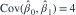
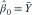
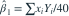
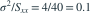
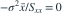

固定设计线性模型  ，10 个误差独立服从
，10 个误差独立服从  。已知
。已知  、
、 。最小二乘估计的性质哪项正确？
。最小二乘估计的性质哪项正确？
，10 个误差独立服从 。已知 、。最小二乘估计的性质哪项正确？- A，且两个估计独立
- B，但两个估计必不独立
- C

- D，且 与 独立
我已思考，展开答案与解析
正确答案：D
- 因设计点中心化，，所以

、
。 - 斜率方差为

；截距与斜率的协方差是
。 - 两个估计都是独立正态误差的线性组合，因此联合正态；零协方差在这里可推出独立。
易错提醒零协方差能推出独立，需要这里的联合正态条件。
南审 813 · 2026 · 二·2(2)，PDF第1—2页
沿原卷最小二乘及分布推导题改为固定设计数值题，补齐正态独立误差条件。
查看参考来源